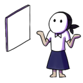

Frequently Asked Questions
What is a digital artist?
A Digital artist is an artist that uses computer software to create art. They are also individuals who use applications to manipulate images and videos for creating various content for the web, video games, or movies. Other forms of digital art are 3d illustrations and interactive experiences. These are created by digital artists to express themselves through technology.
What tools do you use?
 I use the following software applications to create my illustrations.
1. Clip Studio Paint:
Clip Studio Paint is the primary tool/ software I use to create art. It is usually used for manga and animation but it can also be used for photo manipulation and painting. It is a robust tool that offers a lot of unique functions like AI color and 3d objects
2. Adobe Photoshop
Adobe Photoshop is probably the most popular photo editing software. I use this for correcting photos, enhancing, and giving them life. It is indeed the most powerful editing app by date and it boasts features like AI generative fill.
3. Adobe Illustrator
Adobe Illustrator is another powerful tool by Adobe that allows you to create vector images. These images can be used for creating logos, icons, and posters, as well as typography. It is usually used to create personal branding for commercial and personal use.